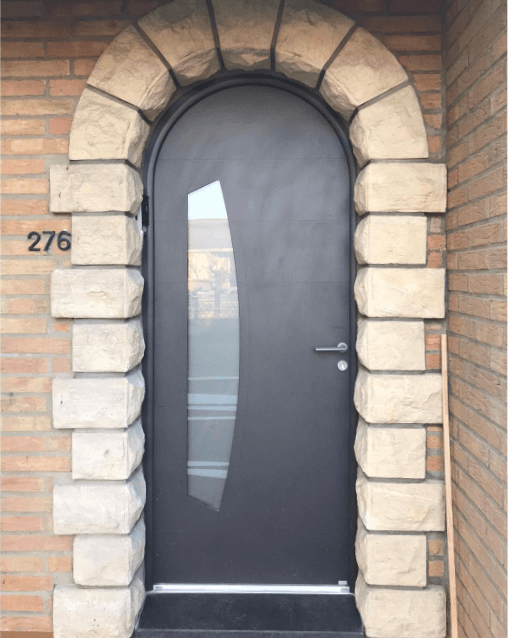
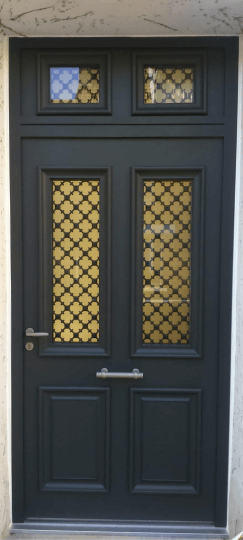

Portes
{% include reduction.html %} {% include contact.html %}
Portes blindées
Les portes blindées certifiées A2PBPI coupe feu de fabrication française vous assure un haut niveau de sécurité grâce à ses certifications. L'intégralité de la porte est ainsi certifié pour retenir 30 min à l'effraction (pieds de biche).
Le fabricant de portes Picard est l'un des seuls à avoir la certification porte blindée sur l'ensemble de la porte.
Portes d'entrée
En aluminium, en acier ou en bois, elle est l'entrée en matière de votre habitation. Des performances acoustiques et thermiques accrues, une étanchéité maximale et une sécurité optimale.